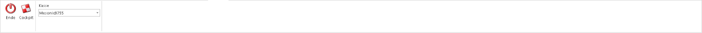
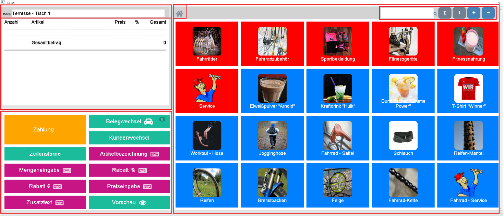
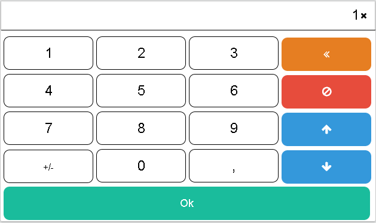
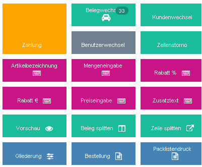
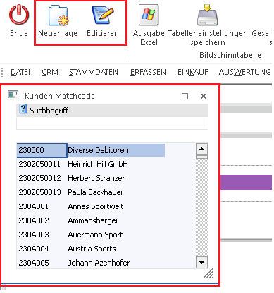
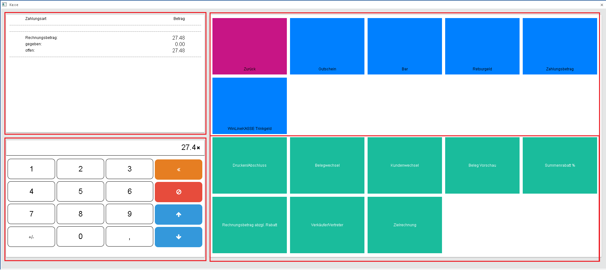

Im Menüpunkt
1 Erfassen
1 Belegerfassung
1 Kasse
gibt es die Möglichkeit Barrechnungen über ein Dashboard zu erfassen.
Hauptdashboard


Dieses Kassendashboard ist in drei Abschnitten aufgeteilt. Links oben wird ein interaktiver und mitlaufender Kassenbon angezeigt sowie darüber eine Belegbezeichnung. Links unten sind die Funktionsbuttons sichtbar, welche vorher in der Tableau Zuordnung konfiguriert wurden.
Auf der rechten Seite befinden sich die zuvor erfassen Artikel des Tableaus in Form von Kacheln. Zusätzlich gibt es rechts oben ein Suchfeld für eine Artikel-Suche und einen + und - Button für Vergrößerung oder Verkleinerung der Schrift der einzelnen Kacheln.
Zusätzlich gibt es einen i-Button, der beim Drücken einen Infomodus aktiviert. Der Button ist orange, solange der Infomodus aktiviert ist. Wenn danach auf einen Artikel (Kachel) geklickt wird, wird eine Artikelinfo zu dem gewählten Artikel angezeigt.
Mithilfe des Summensymbols kann entschieden werden, ob erfasste Artikel immer eine neue Zeile im Kassenbon erstellen sollen oder ob gleiche erfasste Artikel hochgezählt werden.
Bei der Artikelsuche wird automatisch nach der Eingabe eines Textes oder einer Nummer nach diesem Artikel gesucht. Werden mehrere Artikel gefunden wird das Dashboard aktualisiert und die Treffer der Suche werden ggf. durch Scrollen angezeigt. Mit dem Kachel Zurück kann wieder aufs Hauptdashboard gewechselt. Wird nur ein Artikel nach der Artikelsuche gefunden, wird dieser automatisch im Kassenbon eingefügt. Im Dashboard sind auch Unterebenen möglich und daher wird durch Klick auf das Haus-Symbol oben in der Leiste, wieder zurück zum Hauptdashboard gewechselt.
Wahl der Kasse
In der Ribbon-Leiste befindet sich eine Auswahlbox "Kasse" mit der gewählt werden kann, mit welcher der angelegten Kassen lt. Kassen-Stammdaten der Beleg gedruckt werden soll. Diese Wahl der Kasse beeinflusst somit die eingestellte Belegart und welche Signatur beim Druck des Belegs herangezogen werden soll und somit auch den Eintrag des Datenerfassungsprotokolls.
Nummernpad
Das Nummernpad erscheint immer, wenn ein Button gewählt wird, wo eine Zahl erfasst werden kann, wie z.B. bei der Mengeneingabe, nach Auswahl eines Artikels bzw. bei der Preiseingabe. Hier stehen die Zahlen 1-0, ein +/- und ein Beistrich zur Verfügung. Rechts im Nummernpad gibt es 4 verschieden Buttons welche verschieden Funktionen haben.

Ø
Hier wird eine Zahl hinter der Fokus-stehenden Zahl gelöscht.
Ø
Im Hauptdashboard bei den Funktionsbuttons wird wieder zurück
ins Hauptdashboard gewechselt.
Im Zahlungsdashboard kann dieser Button zur
Löschung einer gewählten Zahlungsart im Kassenbon verwendet werden.
Ø
Durch Klicks dieses Buttons wird der eingegeben Wert um 1 erhöht. Falls kein Wert im Eingabefeld eingegeben wurde, wird durch diesen Button mit der Zahl 1 begonnen.
Ø
Durch Klicks dieses Buttons wird der eingegeben Wert um 1 vermindert. Falls kein Wert im Eingabefeld eingegeben wurde, wird durch diesen Button mit der Zahl -1 begonnen.
Funktionsbuttons im Hauptdashboard

Ø Zahlung
Durch Anwahl wird ein neues Kassendashboard angezeigt, welches weiter nachfolgend explizit beschrieben wird.
Ø Belegwechsel
Mittels Klick auf den Button wird der Beleg abgelegt, die Kachelansicht verändert und es kann ein neuer Beleg erfasst werden. Durch nochmaliges Drücken des Belegwechsels kann danach aus den zuvor abgelegten Belegen gewählt werden. (Gesamtsumme, Uhrzeit, Benutzer bzw. Kunde ist hier sichtbar).

Ø Kundenwechsel
Mit dieser Funktion kann der Beleg einem Kunden zugewiesen werden. Mittels Klickwird ein Kunden-Matchcode geöffnet. Wenn ein Kunde ausgewählt wurde wird für die schon erfassten Artikel erneut eine Preisfindung angestoßen. Zusätzlich stehen hier die Buttons "Neuanlage" und "Editieren" zur raschen Neuanlage bzw. zum Editieren eines Kunden zur Verfügung.

Hinweis
Bei der Preisfindung werden zuvor veränderte Preise bzw. gegeben Rabatte bei Artikeln wieder auf den jeweiligen hinterlegten Kundenspezifischen Preis abgeändert.
Falls Staffelpreise verwendet werden, muss folgender mesonic.ini Eintrag gesetzt werden, damit diese im Kassendashbaord richtig aktualisiert werden können:
[Staffelpreise]
Check=2
Ø Zeilenstorno
Mit diesem Button wird jene Artikelzeile gelöscht, welche gerade den Fokus am Kassenbon hat. Zusätzlich können auch zuvor erfasste Zusatztexte mit dieser Option gelöscht werden. Wurde der Beleg bereits als Vorschau ausgegeben, werden die stornierten Zeilen nicht gelöscht, sondern es wird eine minus Menge der Artikelzeile verbucht.
Ø Artikelbezeichnung
Mittels Klick kann für die gewählte Artikelzeile die Bezeichnung abgeändert werden.
Ø Mengeneingabe
Mit dieser Funktion kann die Anzahl der Stück der gewählten Artikelzeile angegeben werden.
Ø Rabatt %
Hier kann ein Rabatt in % für die selektierte Zeile im Kassenbon angegeben werden. Es muss eine negative Zahl erfasst werden, um einen Rabat zu gewähren.
Ø Rabatt €
Hier kann ein Rabatt in € angegeben werden. Auch hier muss der Betrag negativ sein, damit hier der eingegebene Wert von dem Artikelpreis abgezogen wird.
Ø Preiseingabe
Diese Funktion erlaubt es, einen individuellen Preis für eine Artikelzeile zu hinterlegen.
Ø Zusatztext
Mit diesem Button kann ein Text erfasst werden der am Ende des Belegs angezeigt wird.
Ø Vorschau
Durch Anwahl dieses Buttons wird der momentane Beleg als Vorschau mit dem Formular P02W44B ausgegeben. Nach dieser Ausgabe können Artikel welche zum Zeitpunkt der Vorschau erfasst wurden nicht mehr komplett aus dem Beleg gelöscht werden, sondern lediglich mit einer Minuszeile ausgebucht werden.
Ø Beleg splitten
Mithilfe dieser Funktion können Zeilen eines Belegs in einen anderen bzw. neuen Beleg verschoben werden. Diese Funktion kann entweder aufgerufen werden, wenn die Checkbox von mindestens einer Zeile aktiviert ist oder durch Drücken der Funktion ohne markierter Zeile, können diese einzeln markiert werden und durch wiederholtes Drücken des Buttons "Belege splitten" die Zeilen verschieben.
Ø Zeile splitten
Diese Funktion kann bei einer Artikelzeile mit einer Menge von mindestens "2" aufgerufen werden, das heißt man kann mit dieser Funktion aus einer Zeile, zwei Artikelzeilen mit verschiedenen Mengen erzeugen. Die Stückanzahl, welche bei dieser Funktion eingegeben wird bleibt erhalten und die restliche Menge wird als zusätzliche Zeile in den Kassenbon eingefügt.
Ø Benutzerwechsel
Wenn dieser Button gedrückt wird, wird die WinLine, daher auch das Kassendashboard komplett für Eingaben gesperrt. Anschließend ist ein Anmeldungsfenster ersichtlich, bei welchen der gerade angemeldete Benutzer vorbelegt ist. Wenn das Passwort dieses Benutzers eingegeben wird, wird die WinLine wieder entsperrt und es kann weitergearbeitet werden. Zusätzlich kann in dem Anmeldefenster auch ein andere Benutzer/Passwort-Kombination eingegeben werden, um sich mit den neuen Benutzer anzumelden. Es wird dann das Kassendashboard einmal geschlossen, der neue Benutzer angemeldet und danach wieder automatisch ins Kassendashboard gewechselt.
Ø Gliederung
Mithilfe dieser Funktion können bis zu zehn vorgegebene Texte per Mausklick in das Kassendashboard eingefügt werden. Diese Texte können in den Belegoptionen im Register Bezeichnungen in der Tabelle "Textbezeichnungen" vorgegeben werden. Diese Gliederungen können anschließend ebenfalls über die Funktion "Packlistendruck" abgerufen werden.
Ø Bestellung
Mit dieser Funktion kann der direkte Druck des Angebotsformulars "P02W42" bzw. das Formular "P02W42ORDER4POS" angestoßen werden. Beim Ausdruck werden alle Artikelzeilen und Textzeilen berücksichtigt und kann zum Beispiel als Vorabdruck einer Rechnung verwendet werden. Nach Verwendung dieser Funktion wird automatisch in die Belegübersicht gewechselt.
Ø Packlistendruck
Beim Aufruf dieser Funktion ändern sich die Kacheln der Artikelerfassung des Kassendashboard und es können alle bereits zuvor eingefügt Textzeilen, welche mit der Funktion "Gliederung" eingefügt wurden, abgerufen werden. Das heißt, es wird das Angebotsformular "P02W42" bzw. das Formular "P02WPICKLIST4POS" beim Druck herangezogen und enthält den Textinhalt des abgerufenen Textbausteins.
Zahlungsdashboard
In dieses Zahlungsdashboard gelangt man, wenn im Hauptdashboard der Kasse, der Button Zahlung gedrückt wurde.

Auch das Zahlungsdashboard ist in drei Abschnitte aufgeteilt. Links oben befindet sich ein interaktiver Kassenbon wo die Gesamtsumme und die gewählten Zahlungsarten angezeigt werden. Links unten befindet sich ein Nummernpad, welches zur Eingabe von Zahlen verwendet wird. Im rechten Abschnitt des Zahlungsdashboards werden in der oberen Hälfte die im Zahlungstableau hinterlegten Zahlungsarten angezeigt und in der unteren Hälfte die Zahlungsbuttons.
Hinweis Gutscheine
Wertgutscheine dürfen bei deren Ausgabe nicht im Datenerfassungsprotokoll berücksichtigt werden. Viel mehr ist deren Verkauf im Kassenbuch als Kasseneingang festzuhalten. Erst bei Einlösung des Wertgutscheines darf dieser im Datenerfassungsprotokoll mittel Barzahlungsart berücksichtigt werden.
Erklärung der Zahlungs-Buttons im Zahlungsdashboard:
Ø Drucken/Abschluss
Mit dieser Option wird der Belegt abgeschlossen und gedruckt. Im Hintergrund wird sofort die Zahlung erfasst und verbucht. Anschließend kehrt man wieder zurück zum Hauptdashboard und kann einen neuen Beleg erfassen
Ø Belegwechsel
Auch im Zahlungsdashboard steht der Button Belegwechsel zur Verfügung und es kann mittels Klick der aktuelle Beleg abgelegt werden, die Kachelansicht verändert sich und es werden in dem veränderten Dashboard alle geparkten Belege angezeigt, sofern schon ein geparkter Beleg existiert. Hier kann aus bestehenden Belegen ausgewählt werden oder mittels Button neuer Beleg, eine neue Rechnung erfasst werden. (Gesamtsumme, Datum und Uhrzeit, Benutzer bzw. Kunde ist hier sichtbar).
Ø Kundenwechsel
Mit dieser Funktion kann der Beleg einem Kunden zugewiesen werden. Mittels Klick wird ein Kundenmatchcode geöffnet.
Ø Belegvorschau
Durch Anwahl dieses Buttons wird der momentane Beleg als Vorschau mit dem Formular P02W44B ausgegeben. Nach dieser Ausgabe können Artikel welche zum Zeitpunkt der Vorschau erfasst wurden nicht mehr komplett aus dem Beleg gelöscht werden, sondern lediglich mit einer minus Buchung ausgebucht werden.
Ø Summenrabatt %
Hier kann ein Rabatt für die Gesamtsumme angegeben werden. Es muss eine negative Zahl erfasst werden, um einen Rabat zu gewähren.
Ø Rechnungsbetrag abzgl. Rabatt
Mit dieser Funktion kann eine individuelle Gesamtsumme angegeben werden.
Beispiel:
Falls ein Kunde 81,20 € zu zählen hätte, dieser Kunde jedoch einen speziellen Preis vor Ort bekommen soll, kann hier 80 € eingegeben werde. Danach wird die Gesamtsumme für den Beleg auf 80 € gestellt.
Ø Verkäufer/Vertreter
Hier kann der Beleg einem Vertreter zugewiesen werden. Mittels Klickwird ein Vertretermatchcode geöffnet.
Ø Zielrechnung
Mit diesem Button kann eine Mischzahlung abgebildet werden. Es können beispielsweise bei einem Beleg mit der Gesamtsumme von 1000 €, eine Anzahlung von 100 € Bar getätigt werden und anschließend werden mit den offenen 900 € auf Zielrechnung geklickt. Falls noch kein Kunde gewählt worden ist, öffnet sich jetzt ein Kundenmatchcode und es kann ein Kunde gewählt werden. Danach wird der Beleg sofort abgeschlossen und verbucht, wobei anfänglich nur die 100 € in das Datenerfassungsprotokoll geschrieben werden. Erst wenn restliche Zahlungen für den Beleg erfasst werden, werden diese Werte in das Datenerfassungs-Protokoll geschrieben.
Hinweis:
Hier wird beim Druck auf Zielrechnung die Belegart aus dem Kundenkonto und die dort hinterlegt Listbild-Einstellung verwendet. Somit kann hier das Formular welches für den Ausdruck verwendet werden soll, gesteuert werden.